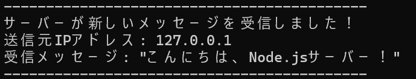

Chapter 3: Node.jsサーバーを作成し、Webサイトと連携させよう
このチャプターでは、Node.jsサーバーを作成し、前チャプターで作成したWebサイト（HTML, CSS, JS）を配信するように設定します。
サーバーがWebサイトのコンテンツを提供し、さらにWebサイトからのメッセージを受け取って処理する仕組みを構築します。
1. `server.js` ファイルを作成
Node.jsプロジェクトのルートディレクトリ（`index.html`と同じ場所）に、`server.js`という名前のファイルを作成し、以下のコードをコピー＆ペーストしてください。
`server.js` の内容:
// server.js
const http = require('http');
const querystring = require('querystring');
const fs = require('fs');
const path = require('path');
const hostname = '0.0.0.0'; // 任意のIPアドレスからの接続を許可（スマホからのアクセス用）
const port = 3000;
const server = http.createServer((req, res) => {
const parsedUrl = new URL(req.url, `http://${req.headers.host}`);
const pathname = parsedUrl.pathname;
// 1. トップページ（index.html）の配信
if (req.method === 'GET' && pathname === '/') {
const filePath = path.join(__dirname, 'index.html'); // index.htmlはルートディレクトリにある想定
fs.readFile(filePath, (error, content) => {
if (error) {
res.statusCode = 500;
res.setHeader('Content-Type', 'text/plain; charset=utf-8');
res.end('Error loading index.html');
} else {
res.statusCode = 200;
res.setHeader('Content-Type', 'text/html; charset=utf-8');
res.end(content);
}
});
}
// 2. メッセージ送信（POSTリクエスト）の処理
else if (req.method === 'POST' && pathname === '/submit-message') {
let body = '';
req.on('data', (chunk) => {
body += chunk.toString(); // データを受信するたびに追加
});
req.on('end', () => {
const parsedData = querystring.parse(body); // URLエンコードされたデータを解析
const message = parsedData.message || 'メッセージなし'; // 'message'フィールドを取得
// 受信したメッセージをターミナル（コンソール）に表示！
console.log('-------------------------------------------');
console.log('サーバーが新しいメッセージを受信しました！');
console.log(`送信元IPアドレス: ${req.connection.remoteAddress || req.socket.remoteAddress}`);
console.log(`受信メッセージ: "${message}"`);
console.log('-------------------------------------------');
// クライアント（ブラウザ）への応答をJSON形式に変更
res.statusCode = 200;
res.setHeader('Content-Type', 'text/html; charset=utf-8'); // HTMLとして解釈させる
res.end(`<script>alert('メッセージを受信しました！'); window.history.back();</script>`);
});
}
// 4. その他のリクエスト（404エラー）
else {
res.statusCode = 404;
res.setHeader('Content-Type', 'text/plain; charset=utf-8');
res.end('お探しのページは見つかりませんでした。\n');
}
});
server.listen(port, hostname, () => {
console.log(`✨ Node.jsサーバーが起動しました！ ✨`);
console.log(`PCからアクセス: http://localhost:${port}/`);
console.log(`ネットワークからアクセス: http://[あなたのPCのIPアドレス]:${port}/ (IPアドレスはPCの環境で確認してください)`);
console.log(`\nサーバーにメッセージが届くと、ここにログが表示されます。`);
});
2. サーバーを起動し、PCのブラウザで確認
コマンドプロンプトまたはターミナルを開き、`server.js`を作成したフォルダに移動します。そして、以下のコマンドを実行してサーバーを起動します。
node server.jsサーバーが起動したら、Webブラウザ（Chrome, Firefoxなど）を開き、アドレスバーに以下のURLを入力してアクセスしてください。
http://localhost:3000/前チャプターで作成したメッセージ送信フォームが表示されるはずです。フォームに好きなメッセージを入力し、「サーバーに送信」ボタンをクリックしてください。
メッセージを送信すると、ブラウザに成功メッセージのアラートが表示され、Node.jsサーバーを起動しているターミナルにあなたが送信したメッセージがログとして表示されるはずです！
このログが表示されたら、サーバーがあなたのメッセージを正しく受け取った証拠です！